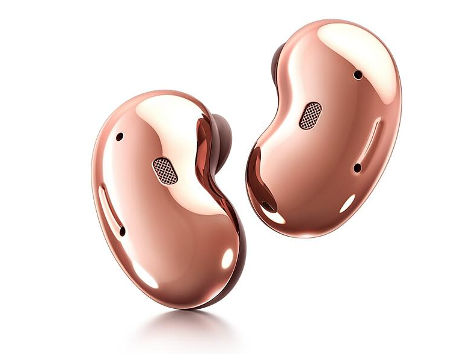
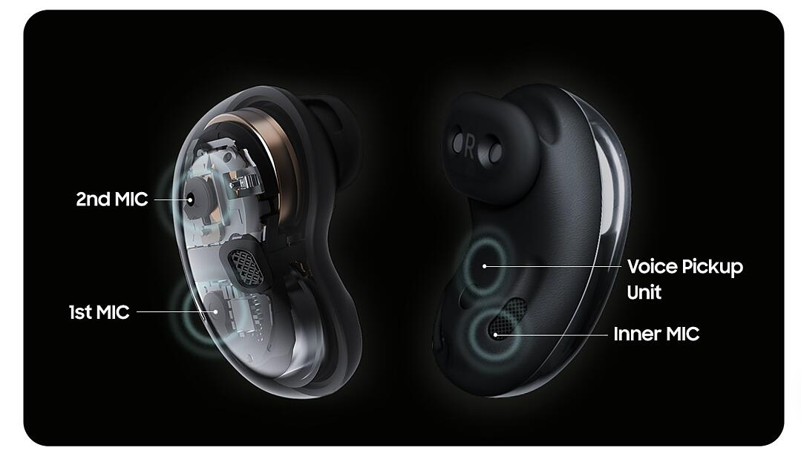

Conheça o TWT Translator
O TWT* é um fone de ouvido bluetooth com funcionalidades que vão além de ouvir música, ele também oferece tradução simultânea, o que significa que você pode falar e ouvir a tradução de outras pessoas ao mesmo tempo.

Diferente daqueles tradutores em que é necessário passar o aparelho para frente e para trás, apertar botões, esperar que uma pessoa termine de falar e a tradução ser entregue para que a outra pessoa possa falar, o TWT*, através da utilização de IA Neural Machine Translation (tradução automática neural), oferece mais liberdade e uma maior facilidade de comunicação.
Reproduz sons nítidos
Os aparelhos possuem microfones triplos que conseguem reconhecer a voz e eliminar ruídos para permitir uma captação correta, além de uma tradução precisa. Com isso, será possível compreender o que a outra pessoa está falando sem perder nenhuma palavra ou ser interrompido por sons externos.

Funciona com Android e iOS
Basta parear os fones de ouvido com o celular, abrir o aplicativo TWT* e selecionar o idioma para qual deseja traduzir.